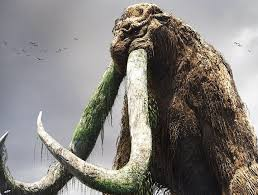

KING KONG
King Kong is a fictional giant monster resembling a colossal gorilla-like ape, who has appeared in various media since 1933. He has been dubbed The Eighth Wonder of the World, a phrase commonly used within the films. His first appearance was in the novelization of the 1933 film King Kong from RKO Pictures, with the film premiering a little over two months later. Upon its initial release and subsequent re-releases, the film received universal acclaim. A sequel quickly followed that same year with The Son of Kong, featuring Little Kong. Toho produced King Kong vs. Godzilla (1962) featuring a giant Kong battling Toho's Godzilla and King Kong Escapes (1967), a series loosely based on Rankin/Bass' The King Kong Show (1966-1969). In 1976, Dino De Laurentiis produced a modern remake of the original film directed by John Guillermin. A sequel, King Kong Lives, followed a decade later featuring a Lady Kong. Another remake of the original, this time set in 1933, was released in 2005 from filmmaker Peter Jackson. Kong: Skull Island (2017), set in 1973, is part of Legendary Entertainment's MonsterVerse, which began with Legendary's reboot of Godzilla in 2014. A sequel, Godzilla vs. Kong, once again pitting the characters against one another, was released in March 2021. The character of King Kong has become one of the world's most famous movie icons, having inspired a number of sequels, remakes, spin-offs, imitators, parodies, cartoons, books, comics, video games, theme park rides, and a stage play.[14] His role in the different narratives varies, ranging from a rampaging monster to a tragic antihero.
------------------------------------------------------------------------------------------------------------------------------------------------
GODZILLA
.jpg)
Godzilla (Japanese: ゴジラ, Hepburn: Gojira, /ɡɒdˈzɪlə/; [ɡoꜜdʑiɾa] (About this soundlisten)) is a fictional monster, or kaiju, originating from a series of Japanese films. The character first appeared in the 1954 film Godzilla and became a worldwide pop culture icon, appearing in various media, including 32 films produced by Toho, four Hollywood films and numerous video games, novels, comic books and television shows. Godzilla has been dubbed the "King of the Monsters", a phrase first used in Godzilla, King of the Monsters! (1956), the Americanized version of the original film. Godzilla is an enormous, destructive, prehistoric sea monster awakened and empowered by nuclear radiation. With the nuclear bombings of Hiroshima and Nagasaki and the Lucky Dragon 5 incident still fresh in the Japanese consciousness, Godzilla was conceived as a metaphor for nuclear weapons.[29] Others have suggested that Godzilla is a metaphor for the United States, a giant beast woken from its slumber which then takes terrible vengeance on Japan.[30][31][32] As the film series expanded, some stories took on less serious undertones, portraying Godzilla as an antihero, or a lesser threat who defends humanity. Later films address themes including Japan's forgetfulness over its imperial past,[33] natural disasters and the human condition.[34] Godzilla has featured alongside many supporting characters. It has faced human opponents such as the JSDF, or other monsters, including King Ghidorah, Mechagodzilla and Gigan. Godzilla sometimes has allies, such as Rodan, Mothra and Anguirus, and offspring, such as Minilla and Godzilla Junior. Godzilla has also fought characters from other franchises in crossover media, such as the RKO Pictures/Universal Studios movie monster King Kong, as well as various Marvel Comics characters, including S.H.I.E.L.D.,[35] the Fantastic Four[36] and the Avengers.[37]
------------------------------------------------------------------------------------------------------------------------------------------------
KING GHIDORAH

King Ghidorah (キングギドラ, Kingu Gidora) is a fictional monster, or kaiju, which first appeared in Ishirō Honda's 1964 film Ghidorah, the Three-Headed Monster. Although the name of the character is officially trademarked by Toho as "King Ghidorah",[17] the character was originally referred to as Ghidorah or Ghidrah in some English markets.[10] Although King Ghidorah's design has remained largely consistent throughout its appearances (an armless, bipedal, golden and yellowish-scaled dragon with three heads, two wings in the shape of fans to fly and two tails), its origin story has varied from being an extraterrestrial planet-killing dragon,[18] a genetically engineered monster from the future,[19] a guardian monster of ancient Japan,[20] or a god from another dimension. The character is usually portrayed as an archenemy of Godzilla and a foe of Mothra,[21] though it has had one appearance as an ally of the latter.[20] Despite rumors that Ghidorah was meant to represent the threat posed by China, which had at the time of the character's creation just developed nuclear weapons,[22] director Ishirō Honda denied the connection and stated that Ghidorah was simply a modern take on the dragon Yamata no Orochi.[23][24][25] King Ghidorah appears as the primary antagonist in the 2019 film Godzilla: King of the Monsters and mentioned in the 2021 film Godzilla vs. Kong.
------------------------------------------------------------------------------------------------------------------------------------------------
MOTHRA

Mothra (モスラ, Mosura) is a fictional monster, or kaiju, that first appeared in the 1961 film Mothra, produced and distributed by Toho Studios. Mothra has appeared in several Toho tokusatsu films, most often as a recurring character in the Godzilla franchise. She is typically portrayed as a colossal sentient larva (caterpillar) or imago, accompanied by two miniature female humanoids speaking on her behalf. Unlike other Toho monsters, Mothra is a largely heroic character, having been variously portrayed as a protector of her own island culture,[2] the Earth[3] and Japan.[4] Mothra's design is influenced by silk worms, their imagos, and those of giant silk moths in the family Saturniidae. The character is often depicted hatching offspring (in some cases, twins) when approaching death, a nod to the Saṃsāra doctrine of numerous Indian religions.[5] Mothra is one of Toho's most popular monsters and second only to Godzilla in her total number of film appearances. Polls taken during the early 1990s indicated that Mothra was particularly popular among women who were, at the time, the largest demographic among Japan's movie-going audience, a fact that prompted the filming of 1992's Godzilla vs. Mothra, which was the best-attended Toho film since King Kong vs. Godzilla.[6] IGN listed Mothra as #3 on their "Top 10 Japanese Movie Monsters" list,[7] while Complex listed the character as #7 on its "The 15 Most Badass Kaiju Monsters of All Time" list.[8] Though Mothra is generally portrayed as female, male individuals of her species have also been featured in the franchise, including Mothra Leo in the Rebirth of Mothra trilogy, and a male Mothra larva who appears alongside his non-identical twin in Godzilla: Tokyo
------------------------------------------------------------------------------------------------------------------------------------------------
RODAN
.jpg)
This article is about the monster. For the 1956 film, see Rodan (film). For other uses, see Rodan (disambiguation). For the French sculptor, see Auguste Rodin. Rodan Godzilla film series character Rodan kaiju.jpg Rodan as featured in Godzilla vs. Mechagodzilla II (1993) First appearance Rodan (1956) Created by Ken Kuronuma Portrayed by Shōwa series Haruo Nakajima Kōji Uruki Masaki Shinohara Teruo Aragaki Millennium series Naoko Kamio Legendary Pictures Jason Liles[1] In-universe information Alias Radon Monster Zero-Two The Fire Demon Titanus Rodan Species Irradiated Pteranodon Rodan (Japanese: ラドン, Hepburn: Radon) is a fictional monster, or kaiju, which first appeared as the title character in Ishirō Honda's 1956 film Rodan, produced and distributed by Toho. Following its debut standalone appearance, Rodan went on to be featured in numerous entries in the Godzilla franchise, including Ghidorah, the Three-Headed Monster, Invasion of Astro-Monster, Destroy All Monsters, Godzilla vs. Mechagodzilla II and Godzilla: Final Wars, as well as in the Legendary Pictures-produced film Godzilla: King of the Monsters. Rodan is depicted as a colossal, prehistoric, irradiated species of Pteranodon.[2] In 2014, IGN ranked Rodan as #6 on their "Top 10 Japanese Movie Monsters" list,[3] while Complex listed the character as #15 on its "The 15 Most Badass Kaiju Monsters of All Time" list.[4]
BEHEMOTH
Behemoth (ベヒモス Behimosu) is a Titan who first appeared in the 2019 Legendary Pictures Godzilla film, Godzilla: King of the Monsters. One of many Titans awakened by King Ghidorah's call in 2019, Behemoth attacked Rio de Janeiro under the evil Titan's command before traveling to Boston with the others
------------------------------------------------------------------------------------------------------------------------------------------------
.jpg)
MUTO
"MUTO" is an acronym for "Massive Unidentified Terrestrial Organism". Director Gareth Edwards stated that "it's basically the UFO of monsters".[6] The film's first draft differentiated the male and female MUTO as Hokmuto and Femuto, respectively. Official merchandise connected with the film refer to the male MUTO as "Winged MUTO" and the female as "Eight-Legged MUTO". While the term "MUTO" is used to identify the two parasitic creatures in the film, it was originally used to reference giant monsters who are yet to be named. Such was the case in the official prequel comic, Godzilla: Awakening, where a hive-minded superorganism from the Permian era that feeds on radiation, is identified as a MUTO before being designated as Shinomura ("Swarm of Death.")[7] In Kong: Skull Island, Bill Randa (played by John Goodman) states that the Monarch agency (first introduced in 2014's Godzilla) specializes in the hunt for Massive Unidentified Terrestrial Organisms.[8] Godzilla: King of the Monsters (2019) changes the monsters' designation from "MUTOs" to "Titans".[8]
-----------------------------------------------------------------------------------------------------------------------------------------------
Thanks for seeing the website this titans are the main titan only if the another main new titan will add we updrate the website